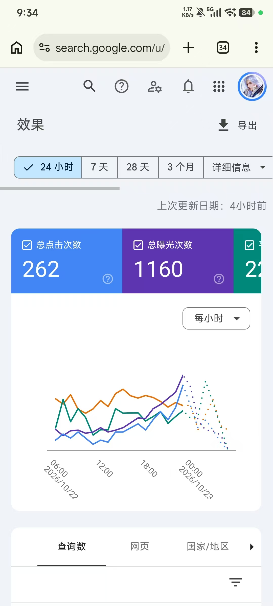

这组讨论给出了两个可复用的判断：ShipAny 的会员制通过预付订阅压低单模板采购价，适合需要成熟骨架、又不具备从零判断 AI 代码能力的人；模板与 Claude 编程不是二选一。更值得跟踪的是“自造品牌词”实验——新站上线不足两天，GSC 24 小时内已有 1,160 次曝光和 262 次点击，但当前只能视为早期搜索反馈，不能据此断言 Google 已因用户搜索而改变排名。
先算清 ShipAny 的成本账
群里先抛出购买顺序的问题：是不是先买会员，再买 ShipAny TanStack 最划算。群友给出的口径是会员 149 美元、常用模板 1.99 美元、模板原价 199 美元；结论是成为会员后采购更便宜。上述数字来自聊天，本文未另做实时核价。
- 会员 149 美元，常见模板 1.99 美元，非会员原价 199 美元。
- 会员制先用一笔订阅锁定用户，再用低价模板降低后续购买决策成本。
- 有群友提醒，1.99 美元模板中不少是一年前的，并已存在盗版；低价不能替代对版本与授权的检查。
这套定价真正值得学习的不是“便宜”，而是购买路径：先建立会员关系，再让用户持续发现低价模板。对买家而言，决策重点应落在模板是否仍在维护、依赖是否过时、授权范围是否匹配，以及后续改造成本是否可承受。
模板和 Claude 不是二选一
askuy 追问：既然有 Claude，为什么还要模板，不直接用 AI 搓？群里的回答把它拆成两个前提：有成熟骨架时，建站可以更快，并且不必把注意力都耗在基础能力模块上；没有现成骨架时，AI 当然可以写，但开发者必须能看懂代码、理解架构，并判断 AI 产出是否正确。
- 模板先提供已经搭好的模块与整体结构，减少在基础设施上反复试错，把精力放到业务逻辑和调通。
- 如果从空白开始让 AI 写，前提是能看懂代码、理解架构，并能判断产出是否正确。
- 模板也可以作为 AI 继续开发的基线，两者并非互斥关系。
因此，选择标准不是“模板还是 AI”，而是哪种起点更能降低当前项目的不确定性。有能力审查代码的人可以更直接地从空白开始；暂时无法判断 AI 产出的新手，成熟模板更像一个可以对照的参照系。两种路径都需要人工验收，模板本身也不能代替业务验证。
自造品牌词的早期搜索反馈
2026年10月23日，哥飞分享了一个与群友合作的新站：站点上线不足一天半到两天，GSC 的所选 24 小时窗口显示 1,160 次曝光、262 次点击。他称这些搜索几乎都来自自己品牌词的搜索量，并把这种做法称为“自己造词”模式。

这张截图能确认账户在所选窗口内的汇总表现，但没有展开查询词列表。因此，“曝光几乎都来自自造品牌词”仍然来自分享者的补充说明；要核验这一点，需要继续查看 GSC 的查询数明细，而不是只看上方两个总数。
用户改用更长搜索词，不等于谷歌已改排名
哥飞随后解释了 GSC 查询词里的现象：因为选用的品牌本身已经是一个存在的词，用户只用 A 搜索时找不到站点，于是改搜 A B；也有些人直接搜索 A.域名后缀，最后在后几个结果中找到网站。他把这种连续搜索理解为用户在向谷歌表达更明确的需求，并准备继续观察几天，看搜索 A 时站点是否会进入结果。
| 观察或推论 | 当前证据 | 边界 |
|---|---|---|
| 用户会用更长词和域名寻找站点 | 分享者看到的 GSC 查询词及搜索结果位置 | 能说明用户有明确寻找意图，不能单独证明排名机制变化 |
| 品牌词已经带来曝光和点击 | 24 小时截图中的 1,160 次曝光、262 次点击 | 时间窗短且只有一个站；截图未展开查询词归属 |
| 继续搜索会促使谷歌调整 A 的排名 | 分享者计划继续观察数天 | 仍待验证，当前不能当作结论 |
这里要把“用户行为观察”和“搜索引擎机制判断”分开。前者已经有查询词记录，后者还需要跨日对比排名与搜索词变化。分享者明确表示自己暂时不把结论说出来，本文也不替这段观察补上未经证明的因果解释。
把两条线索落成可执行检查
- 买模板前，核对最近更新时间、依赖版本、授权范围和维护情况，不把 1.99 美元当成质量保证。
- 让 AI 从空白开发前，先确认自己能否审查代码、理解架构并完成上线后的故障判断。
- 自造品牌词至少连续记录多日，分别观察 A、A B、A.域名后缀三类查询的曝光、点击与排名。
- 把点击继续向转化和搜索意图核验，最后仍要回答韩建伟提出的问题：需求能不能对应上。